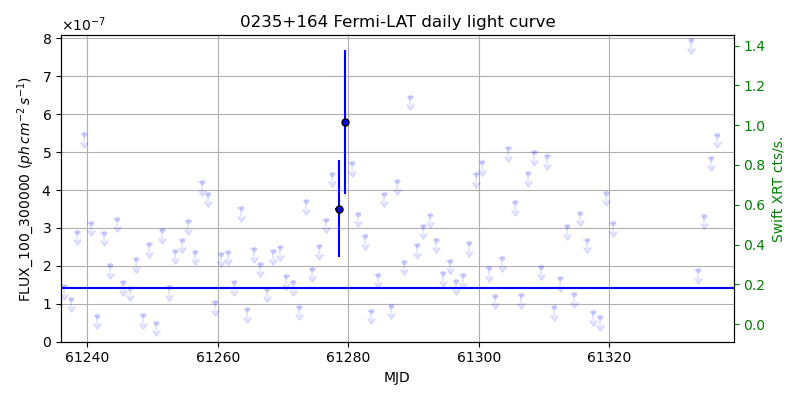
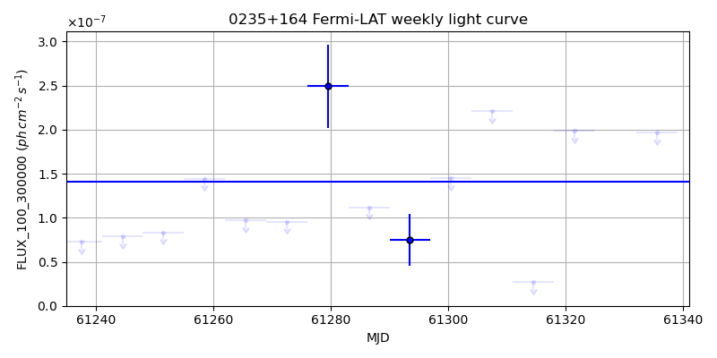
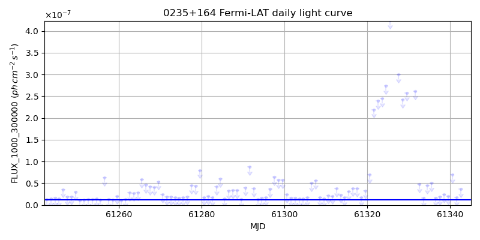
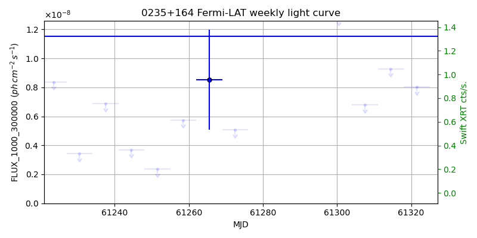

LAT Lightcurve site: https://fermi.gsfc.nasa.gov/ssc/data/access/lat/msl_lc/source/0235p164
Swift site: https://www.swift.psu.edu/monitoring/source.php?source=PKS0235+164
NED: Query
Time of last update of this page: UT: 2026-10-17 15:13 (MJD: 61330.634)
| Property | Value |
|---|---|
| R.A. | 2:38:38.88 |
| Dec. | 16:36:57.6 |
| z | 0.940 |
| 3FGL SpectrumType | LogParabola |
| 3FGL PL Index | |
| 3FGL Flux_100_300000 | 1.41e-07 1 / (s cm2) |
| 3FGL Flux_1000_300000 | 1.15e-08 1 / (s cm2) |
| 3FGL Flux >200 GeV | 1.16e-11 1 / (s cm2) |
| 3FGL Extrap. Crab >200 GeV | 0.05 |
| 3FGL Flux After EBL Absorption >200GeV | 2.41e-13 1 / (s cm2) |
| 3FGL EBL Crab Fraction >200GeV | 0.00 |

| MJD | dMJD | Flux | dFlux | Frac3FGL | FracCrab>200GeV | EBLFracCrab>200GeV |
|---|---|---|---|---|---|---|
| 61325.50 | 0.50 | 9.82e-06 | 0.00e+00 | 0.00 | 0.00 | 0.00 |
| 61326.50 | 0.50 | 1.17e-06 | 0.00e+00 | 0.00 | 0.00 | 0.00 |
| 61327.50 | 0.50 | 1.03e-05 | 0.00e+00 | 0.00 | 0.00 | 0.00 |
| 61328.50 | 0.50 | 2.68e-06 | 0.00e+00 | 0.00 | 0.00 | 0.00 |
| 61329.50 | 0.50 | 6.24e-06 | 0.00e+00 | 0.00 | 0.00 | 0.00 |

| MJD | dMJD | Flux | dFlux | Frac3FGL | FracCrab>200GeV | EBLFracCrab>200GeV |
|---|---|---|---|---|---|---|
| 61293.50 | 3.50 | 7.50e-08 | 2.92e-08 | 0.53 | 0.03 | 0.00 |
| 61300.50 | 3.50 | 1.45e-07 | 0.00e+00 | 0.00 | 0.00 | 0.00 |
| 61307.50 | 3.50 | 2.21e-07 | 0.00e+00 | 0.00 | 0.00 | 0.00 |
| 61314.50 | 3.50 | 2.73e-08 | 0.00e+00 | 0.00 | 0.00 | 0.00 |
| 61321.50 | 3.50 | 1.99e-07 | 0.00e+00 | 0.00 | 0.00 | 0.00 |

| MJD | dMJD | Flux | dFlux | Frac3FGL | FracCrab>200GeV | EBLFracCrab>200GeV |
|---|---|---|---|---|---|---|
| 61325.50 | 0.50 | 4.24e-07 | 0.00e+00 | 0.00 | 0.00 | 0.00 |
| 61326.50 | 0.50 | 6.86e-07 | 0.00e+00 | 0.00 | 0.00 | 0.00 |
| 61327.50 | 0.50 | 3.00e-07 | 0.00e+00 | 0.00 | 0.00 | 0.00 |
| 61328.50 | 0.50 | 2.42e-07 | 0.00e+00 | 0.00 | 0.00 | 0.00 |
| 61329.50 | 0.50 | 2.58e-07 | 0.00e+00 | 0.00 | 0.00 | 0.00 |

| MJD | dMJD | Flux | dFlux | Frac3FGL | FracCrab>200GeV | EBLFracCrab>200GeV |
|---|---|---|---|---|---|---|
| 61293.50 | 3.50 | 1.55e-08 | 0.00e+00 | 0.00 | 0.00 | 0.00 |
| 61300.50 | 3.50 | 1.28e-08 | 0.00e+00 | 0.00 | 0.00 | 0.00 |
| 61307.50 | 3.50 | 6.78e-09 | 0.00e+00 | 0.00 | 0.00 | 0.00 |
| 61314.50 | 3.50 | 9.28e-09 | 0.00e+00 | 0.00 | 0.00 | 0.00 |
| 61321.50 | 3.50 | 8.04e-09 | 0.00e+00 | 0.00 | 0.00 | 0.00 |
--------------------------------------------------------- Using user-supplied coords: 2:38:38.88 16:36:57.6 2000 --------------------------------------------------------- FLWO UT night of: 2026-10-18 Local Sid. @ Midnight: 01:23 Sunset (-15.0) (local, UT): 18:56 01:56 Sunrise (-15.0) (local, UT): 05:22 12:22 Moonrise (local, UT): Moonset (local, UT): 22:59 05:59 Moon phase: 0.47 --------------------------------------------------------- AzTime LSID UT Obj_el Obj_az Mn_el Mn_az Sep. --------------------------------------------------------- 18:56 20:18 01:56 4.5 73.0 30.5 195.3 114.9 19:26 20:48 02:26 10.6 76.7 28.5 202.5 114.8 19:56 21:18 02:56 16.8 80.4 25.9 209.3 114.6 20:26 21:48 03:26 23.1 84.0 22.6 215.6 114.4 20:56 22:19 03:56 29.5 87.7 18.8 221.3 114.3 21:26 22:49 04:26 35.9 91.6 14.5 226.6 114.1 21:56 23:19 04:56 42.3 95.9 9.9 231.4 113.9 22:26 23:49 05:26 48.6 100.8 5.0 235.7 113.7 22:56 00:19 05:56 54.8 106.7 0.2 239.8 113.4 23:26 00:49 06:26 60.8 114.2 -5.5 243.5 113.2 23:56 01:19 06:56 66.4 124.5 -11.3 247.0 113.0 00:26 01:49 07:26 71.2 139.5 -17.0 250.4 112.7 00:56 02:19 07:56 74.4 161.5 -22.8 253.6 112.5 01:26 02:49 08:26 74.9 188.9 -28.7 256.7 112.2 01:56 03:19 08:56 72.6 213.4 -34.7 259.8 111.9 02:26 03:49 09:26 68.2 230.7 -40.7 263.0 111.6 02:56 04:20 09:56 62.9 242.5 -46.8 266.4 111.3 03:26 04:50 10:26 57.0 250.8 -52.8 270.1 111.0 03:56 05:20 10:56 50.9 257.2 -58.9 274.3 110.6 04:26 05:50 11:26 44.6 262.4 -64.9 279.6 110.3 04:56 06:20 11:56 38.2 266.9 -70.8 287.0 110.0 05:22 06:46 12:22 32.7 270.4 -75.7 297.1 109.7 --------------------------------------------------------- Dark hours >55 deg.: 4.61 srcstart (UT): 2026-10-18 05:59 srcend (UT): 2026-10-18 10:36